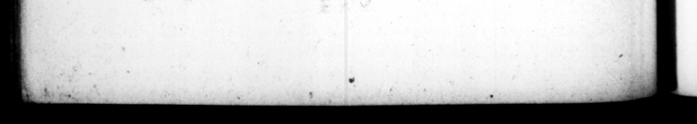

* 194 convivio interponeretut, nec mera moleſte tam 0 ark honorem cœnæ ſug, | die ledenti in "IC 1 auRione mir, qui neſcio quid Tivoli ducentis illibus traderet: diceretique ca natuum ua | tu ipſous. be MT nth es * * 2 = Vectigalia nova — maudita, primum per pub; Ficanos, deinde quia lucrum exuberabat , per centuriones trikunofque prætorianos exercuit: nullo rerum aut hominum genere omiſſo, cui non tributi aliquid imponeret. Pro edulits, qua tota urle venirent, certum ſtatumque exigebatur. Pro litibus atque 2 ubicumque conceptis, quadrageſima ſumIz, de qua litigaretur: nec ſine pona, ſi quis compoſaiſſe vel donaſſe negotium conAineeettur. Ex gerulorum iurnis quæſtibus pars octava, ex capturis proſtitutarum antum quæque uno concuitu mereret. Additumque ad caput legis, ut tenerentur publico, & que meretrieſſent. a 41. Hujuſmodi vectigalihus indictis, neque propoſitis, cum per ignorantiam ſoripture multa commiſſa fierent, tandem flagitante populo Romano propoſuit quidem lefem ſed & minutiſſimis iteris, & anguſtiflimo loco, uti ne cui deſcribere licerer. Ac ne quod non manubiarum genus experiretur, lupanar in atio conſtituit ; diſtinctiſque is pro Joct dignitate compluribus ellis, in quibus matrone ingenutae ſtarent. Miſit circum” ra; & baſilicas nomencu20 Nogatoribüs, ut per fallaciam pay two hundred thouſand that he ſhonld ſap with Ceſar upon his own invitation. ny to his tabl be — of ese 1s _ _ Pleaſed to frond it us. tued at ſo bigh 4 rate. i ſent * Day following ſome bauble or int der to hm, as he was 277 the e 675 fert an _ 46. He levied bis nem taxes, mnt © iy the pions, het often 1 cans, er wn l becauſe the Money ariſing from the t prodigious, by tenturions m n. bunes of th: guard, no kind either of things or perſons being exempted from the payment of ſome. duty or other. Bir all ea: ables that were [old in the city a certain exciſe was exatfed. For all law-juits and trials in what, court ſ6ever, the fortieth part of the (wm in diſpute, and ſuch as were conviffed of agreeing or dropping the matter in debate, were made liable te 4 penalty. Ont of th: day-wages of porters, hett. ceived; an eighth part, and of the gains of common tirumpets, - as much as they received for one bout, And A clauſe was inſerted in the law, that all thoſe - ſhould be liable to pay, who kept wo-. euti ſale, and tbat . Reels wr Gr. cum, & qui lenocinium feciſſent: necnon & matrimonia obnoxis 1. Theſe taxes being laid, but the. af by which they 2 laid 1 b: ver expoſed to publick view, Feat blunders were committed for want of 4 ſufficient knowledge of the law, At length, upon the importunate requeſt. o the people, he hung up the act, but it. in 4 very ſmall character, and in 4 narrow place, that no tranſcribe it. And, to leave no ſat of extortion untryed, he ſet up a ſtew in, the palatium, with a great wariety apartments ſhed in à manner .table to the dignity of the place & * which married women and, boys free. born flood ready foghe reception * comers, He ſent too his namen?
